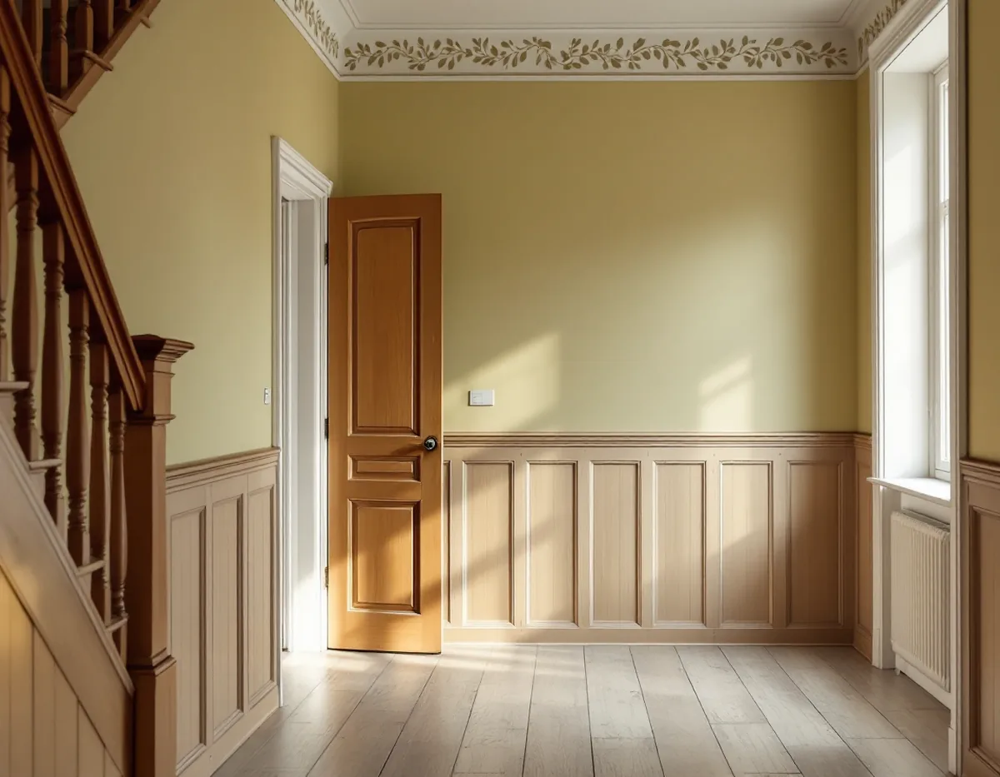
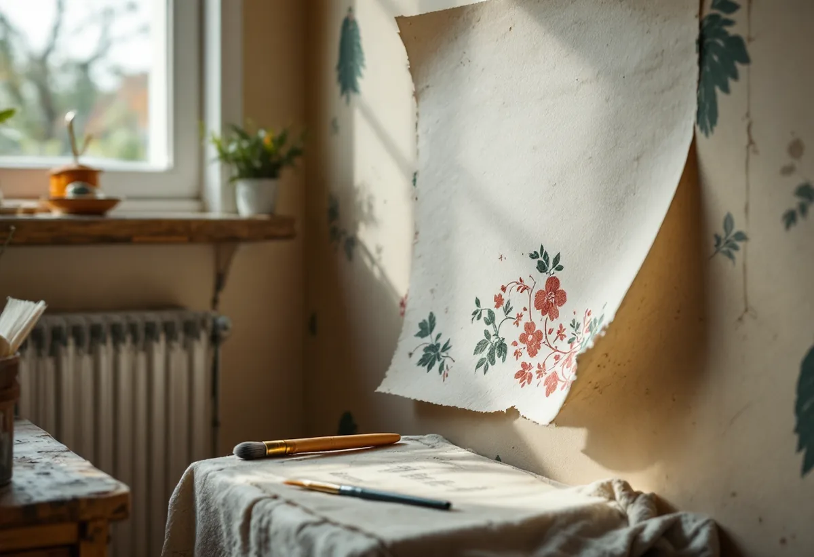

Platsbesök
Vi lyfter en kant och ser om det finns dekor, papp eller flera tapetlager.
I villasamhällena längs Saltsjöbanan kan en vägg ha haft både målad dekor och flera tapeter. Ibland ligger en schablonmålning dold under ett senare lager. Geal Entreprenad AB tapetserar i villor, radhus och bostadsrätter i Nacka och ser efter vad som sitter under innan vi föreslår hur väggen ska få sin nya yta.

Nackas kulturmiljöprogram beskriver hur Saltsjöbanan hörde ihop med etableringen av villastaden och badorten Saltsjöbaden. Från 1890-talet växte flera villasamhällen fram längs banan, och till skillnad från de äldre sommarnöjena planerades de för åretruntbruk. Saltsjöbaden invigdes i början av 1890-talet. Redan 1896 fanns ett 60-tal villor, och i början av 1900-talet var alla 120 tomter på Neglingehalvön sålda. Den tidiga bebyggelsen präglas av stora tomter och påkostade villor i panelarkitektur.
Storängen grundades 1904 av Tjänstemännens egnahemsförening. Det ursprungliga området på 77 tomter blev snabbt fulltecknat, och 1910 hade föreningen omkring 110 medlemmar. En egen byggnadsordning sa bland annat att villorna fick ha högst två våningar och att grundytan fick vara högst en tiondel av tomten. De flesta villorna byggdes under 1900-talets första decennier i nationalromantik, jugend och tjugotalsklassicism, och det finns också funkisvillor från 1930- och 40-talen.

Svenska Byggnadsvårdsföreningens tidskrift Byggnadskultur skriver att schablonmåleri har använts för att dekorera rum i århundraden. Det var särskilt vanligt under 1800-talet, fram till senare delen av seklet, då tillverkningen av papperstapeter industrialiserades och tapeterna blev billigare och lättare att få tag på. På 1990-talet blev schabloner populära igen.
I föreningens frågespalt finns en sekelskiftesgård som moderniserades på 1930–40-talet, där hallens övre del var tapetserad med papp och schablonmålad. Föreningen tyckte att schablonmåleriet absolut var värt att behålla. Både linoljefärg och tempera kan tillverkas och brytas till rätt kulör på plats av en målare som är van vid äldre tekniker, och en sådan målare kan också reparera skador i papp och retuschera.
Hittar vi en målad dekor när vi lyfter en kant av tapeten i en äldre villa i Nacka stannar vi och visar dig, innan något tas bort.
I en fråga om schablonmålningar på träväggar som målats över med okänd vit färg råder föreningen att först ta reda på vilka färgtyper det handlar om. Ofta är schablonmålningen gjord med någon sorts oljefärg, och om det nya lagret är plastfärg kan det ibland tas bort genom uppfuktning med tapetklister under plastfolie. Det finns också färgborttagningsmedel som kan fungera.
Föreningen varnar samtidigt för att en schablonmålning i limfärg riskerar att försvinna, och att det även i andra fall kan vara knepigt. Är originalet viktigt kan det vara värt att köpa några konsulttimmar av en målerikonservator som visar en lämplig metod. Vårt förslag är då att den nya tapeten sätts upp på de andra väggarna, medan den dekorerade väggen behandlas för sig.
Alla gamla lager behöver inte bort. I en fråga om ett rum där tapeter satts upp i flera omgångar och till sist målats över svarade föreningen att det går bra att måla med äggoljetempera direkt på väggarna, med en grundfärg först. Med många lager tapet blir det blåsor vid målningen, men de brukar sträcka ut sig.
Ska väggen i stället få ny tapet går vi igenom om lagren sitter fast nog att vara underlag, eller om de ska ner. Om utvändig målning i villasamhällena kan du läsa under målare i Nacka.
Vi lyfter en kant och ser om det finns dekor, papp eller flera tapetlager.
Hittar vi en målning bestämmer du om den ska sparas, tas fram eller täckas.
Underarbete och tapetsering står var för sig, rum för rum.
Lösa lager tas ner och väggen lagas och förlimmas.
Tapeten sätts upp våd för våd med passning av mönstret.
Vi går igenom rummen med dig och lämnar överbliven tapet.
Skatteverket räknar tapetsering som rotarbete. I en villa ska arbetet göras i bostaden som du äger, i en bostadsrätt innanför bostadens tak, väggar och golv.
Företaget får dra av högst 30 procent av arbetskostnaden. Rotavdraget kan bli högst 50 000 kr per person och år, och högst 75 000 kr om rutavdrag räknas in. Tapet, papp, klister och resor ger inget avdrag. Geal drar avdraget direkt på fakturan.
Antalet lager, om en dekor ska sparas eller tas fram och hur mycket väggen behöver lagas påverkar mest. Efter ett gratis platsbesök får du ett skriftligt kostnadsförslag.
Fasad, fönster och invändig målning.
Målare i Stockholm →Takbyte, takbesiktning och plåtarbeten.
Takläggare i Nacka →Saltsjöbaden, Boo och Älta.
Takrenovering i Nacka →VA, LTA och dagvatten på tomten.
Byggföretag i Nacka →Uthus, räcken och plåt kring villan.
Fasadmålning i Nacka →Villasamhällena vid Saltsjöbanan.
Fönsterbyte i Nacka →Linoljefärg, väder och verkstad för villafönster.
Fönsterrenovering i Nacka →Slipa och olja trägolvet.
Golvslipning i Nacka →Farledens plåttak och Saltsjöbadens villor.
Plåtslagare i Nacka →Villastäder, sommarhus och radhus.
Badrumsrenovering i Nacka →Sommarvillor, stugor och villor i Nacka.
Fasadrenovering i Nacka →Sommarvillor, stugor och hus med källarplan.
Golvläggare i Nacka →Radhuskök, sekelskiftesvillor och vedspis.
Köksrenovering i Nacka →Panelvillor och sommarnöjen i Nacka.
Målare i Nacka →Verandor, panel och altaner.
Snickare i Nacka →Strandskydd och villasamhällen.
Tillbyggnad i Nacka →